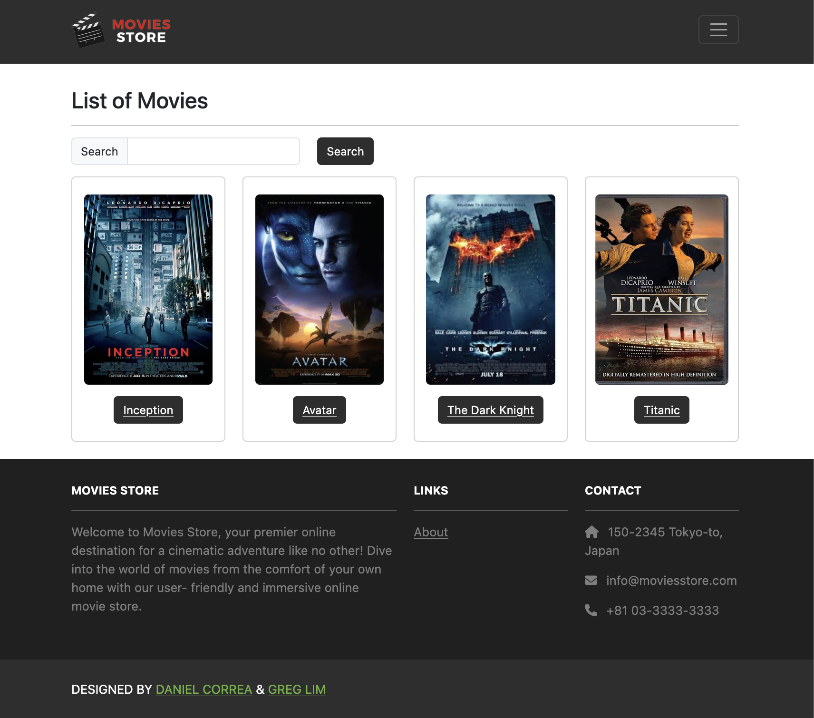
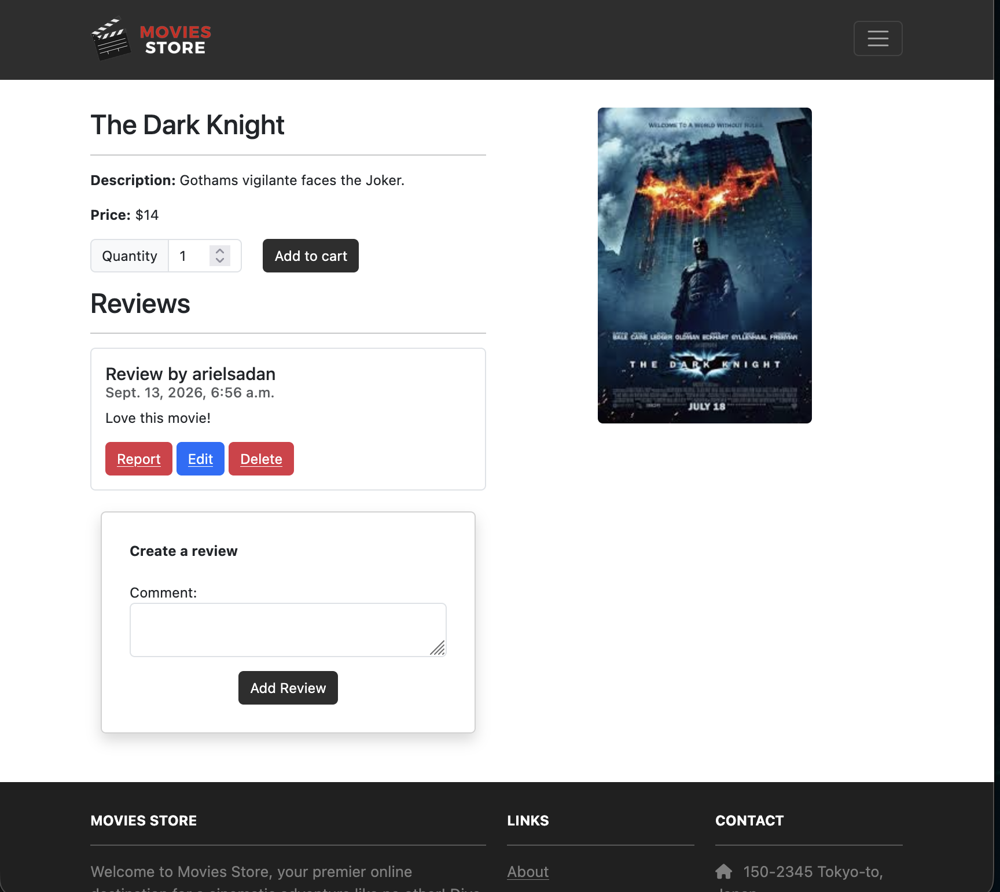
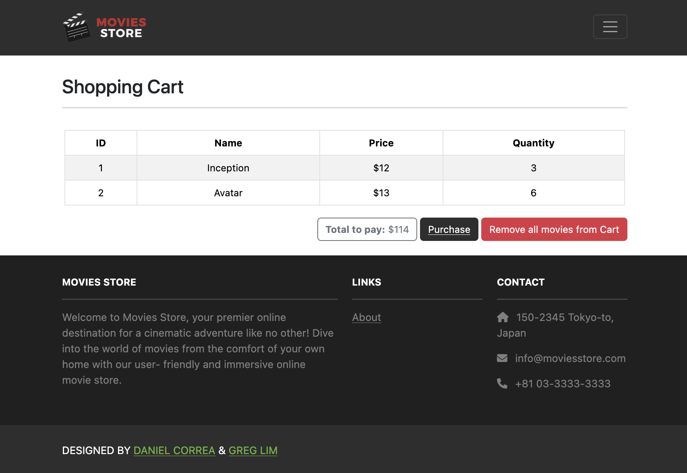

Discover movies
Visitors can browse the catalog and search for a title without navigating through unnecessary pages.
User story: As a user, I want to be able to search movies per title so I can make my selections.
Django web application
A full-stack movie shopping experience built to make discovery, account management, checkout, and order review feel straightforward.
Project overview
GT Movies Store is an e-commerce web application where visitors can browse and search a movie catalog. Registered users can manage a shopping cart, complete an order, and return to review their order history.
The interface uses consistent navigation and responsive layouts so that the principal user flows remain clear across desktop and mobile screens.
Features & user stories
Visitors can browse the catalog and search for a title without navigating through unnecessary pages.
User story: As a user, I want to be able to search movies per title so I can make my selections.
Movie detail pages provide useful information and a direct add-to-cart action, while the cart supports review before purchase.
User story: As a user, I want to be able to add one or more items of a movie to my shopping cart so I can purchase them in the future.
Registration, login, and logout flows provide access to protected, account-specific features.
User story: As a user, I want to log in so that I can access the Movies Store.
Authenticated users can complete a purchase and revisit their order history after the session ends.
User story: As a user, I want to see a list of my orders so I can track what I have purchased and my expenses.
Application screens



Development process
I translated each requirement into a user action and expected result, then identified the views, templates, models, and routes needed to support it.
I implemented one complete flow at a time through the textbook so each feature could be tested in the browser before moving on.
I checked documentation, inspected error messages, and reduced problems to small reproducible cases. Exact term matching, for example, was essential when debugging the navigation bar.
Reflection
The project strengthened my understanding of Django’s model–view–template structure and showed how small implementation details affect the full user experience. Incremental testing made debugging faster and integration less risky.
Video demonstration